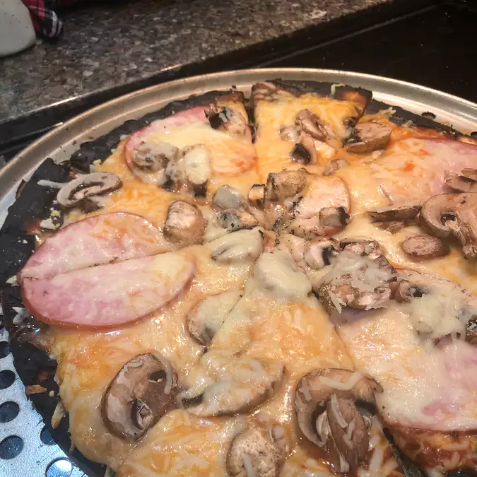

Pizza

Description
This is pizza made on a gas grill. The results are great, and plenty of variations would work. The trick is to grill one side of the pizza dough first, then add the toppings.
Ingredients:
- 1 ready made pizza crust
- 2 cups shredded mozzarella cheese
- 1 cup tomato sauce
- ½ cup chopped green bell pepper
- ½ cup fresh sliced mushrooms
Steps:
- Preheat an outdoor grill for high heat and lightly oil grate.
- Roll out prepared pizza dough to a size that will fit your grill. Place on grill for 5 minutes, or to desired doneness, and flip over. Now add the sauce, cheese, green bell pepper and mushrooms.
- Cover the grill and allow to cook over high heat for 5 to 10 minutes, or until cheese is melted and bubbly.